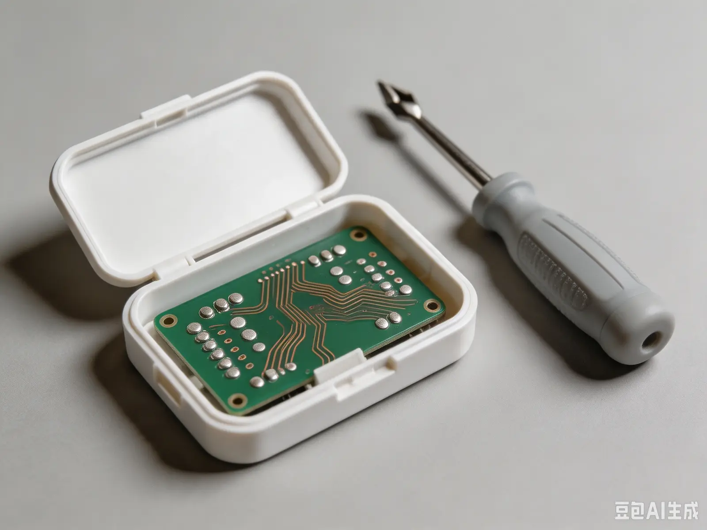

策划部 › 方案存档
《青云村科技支农活动方案 V2》
方案版本：V2 ｜ 拟稿：策划部 ｜ 上传时间：2026-07-18 ｜ 状态：未执行
一、项目背景
青云村位于临水县西北部，以种植业为主。2026 年，经学院牵线，科联与禾丰智慧农业科技有限公司达成合作意向，计划在青云村建设“智慧农业示范点”，安装物联网环境监测设备 20 套，覆盖村主要种植片区。
二、执行计划
7 月 16 日—7 月 18 日：设备安装与调试（硬件部负责）；7 月 19 日：入户走访，收集农户意见（村西片区）；7 月 20 日：示范点参观与数据演示。
三、预算
设备采购、运输、村民补贴等合计约 8.6 万元。其中设备费用由合作企业承担，科联承担交通与食宿。
四、附录
（略。V3《安全方案》原件被收缴，未能归档。）
我们装了 20 台“监测设备”，可它们根本没有通电。
我拆开看了，里面只有一块空电路板。
公司的人只关心我们每天在村里拍了多少张照片、走了哪条路。
有人在统计我们。V3 的“安全方案”被他们拿走了。
如果看到这页的是科联的人——别在村里问太多。 —— T
我拆开看了，里面只有一块空电路板。
公司的人只关心我们每天在村里拍了多少张照片、走了哪条路。
有人在统计我们。V3 的“安全方案”被他们拿走了。
如果看到这页的是科联的人——别在村里问太多。 —— T

本页最后编辑：2026-07-26 02:19